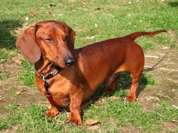
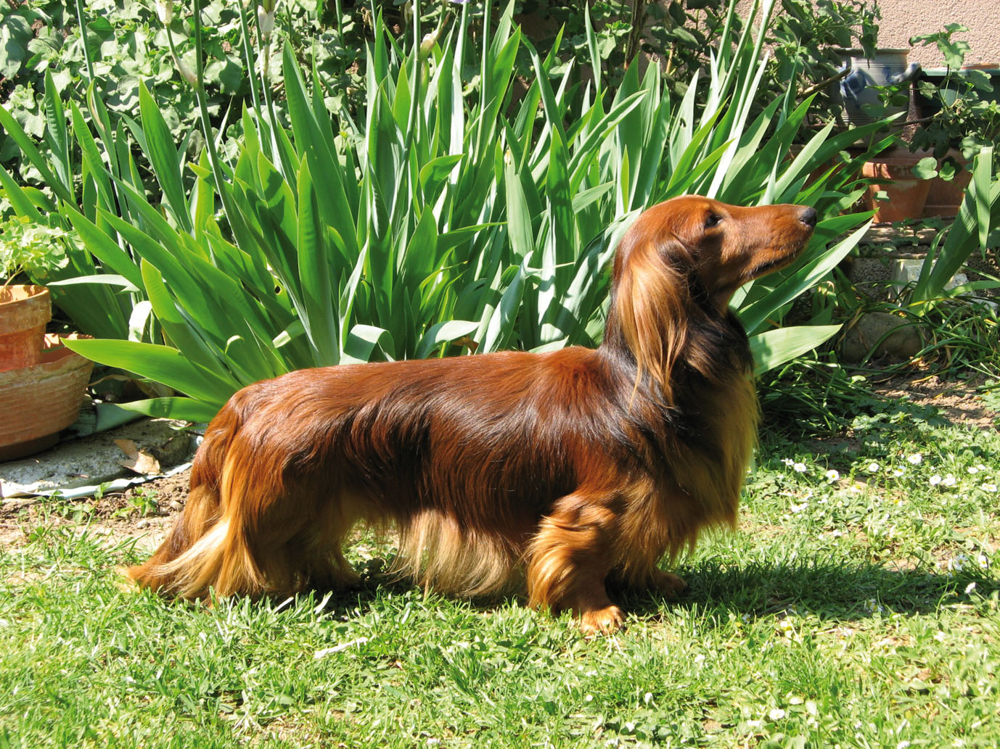

1. Le teckel à poils courts (ou ras)
Caractéristiques
Le Teckel standard à poil ras est petit mais il n'est pas nain ! C'est en fait un chien de taille moyenne avec des pattes courtes. À l'âge adulte, il mesure environ 35 cm et pèse entre 9 et 12 kg. Il a un beau pelage doux et lisse dont la robe peut prendre différentes couleurs
Personnalités
Ce chien a un caractère très indépendant et nécessite une éducation douce, cohérente et patiente. Une socialisation précoce est nécessaire pour familiariser le Teckel avec les enfants, les inconnus et les autres animaux. C'est une race qui s'attache à sa famille et plus particulièrement à l'un de ses membres ; il peut être distant avec les étrangers.
Origines
L'origine des Teckels remonte au 15e siècle, en Allemagne. Cependant, des chiens lui ressemblant sont représentés sur des œuvres d'art égyptiennes et mexicaines. Les restes d'un chien similaire ont aussi été retrouvés avec des épaves de bateaux en Italie, datant du 1er siècle de notre ère. Le standard de cette race allemande a été établie en 1879 et le club de race créé en 1888. Le Teckel fit son entrée en Grande Bretagne grâce au Prince Albert. Il fut très apprécié au 19e siècle en Angleterre et aux États-Unis.
2. Le teckel à poils longs
Caractéristiques
Le Teckel à poil long est petit mais pas nain ! Ce chien de taille moyenne, court sur pattes, mesure environ 35 cm et pèse entre 9 et 12 kg à l'âge adulte. Il a un joli pelage doux et droit et la robe peut prendre différentes couleurs.
Personnalités
Le Teckel à poil long est un chien vif, audacieux et courageux. Il peut être obstiné et indépendant. Le Teckel à poil long est cependant supposé être plus calme et plus obéissant que les deux autres variétés (à poil ras et dur). Il a un bon flair et adore suivre des pistes quand il est à l'extérieur ; c'est également un bon chien de compagnie, fidèle et au bon caractère. Le Teckel à poil long aime les humains et fera un compagnon gratifiant et affectueux.
Origines
L'origine des Teckels remonte au 15e siècle, en Allemagne, bien que des chiens similaires soient représentés sur des œuvres d'art égyptiennes et mexicaines. Le standard de cette race allemande a été établie en 1879 et le club de race créé en 1888. Le Teckel fit son entrée en Grande Bretagne grâce au Prince Albert. Il fut très apprécié au 19e siècle en Angleterre et aux États-Unis mais perdit sa popularité pendant la première guerre mondiale en raison de ses origines germaniques. Heureusement, les préjugés ont disparu et ce chien est redevenu un chien de compagnie apprécié de toute la famille, ainsi qu'un auxiliaire de chasse. Le Teckel standard a d'abord été utilisé à la chasse par les braconniers, puis il participa à d'autres chasses.